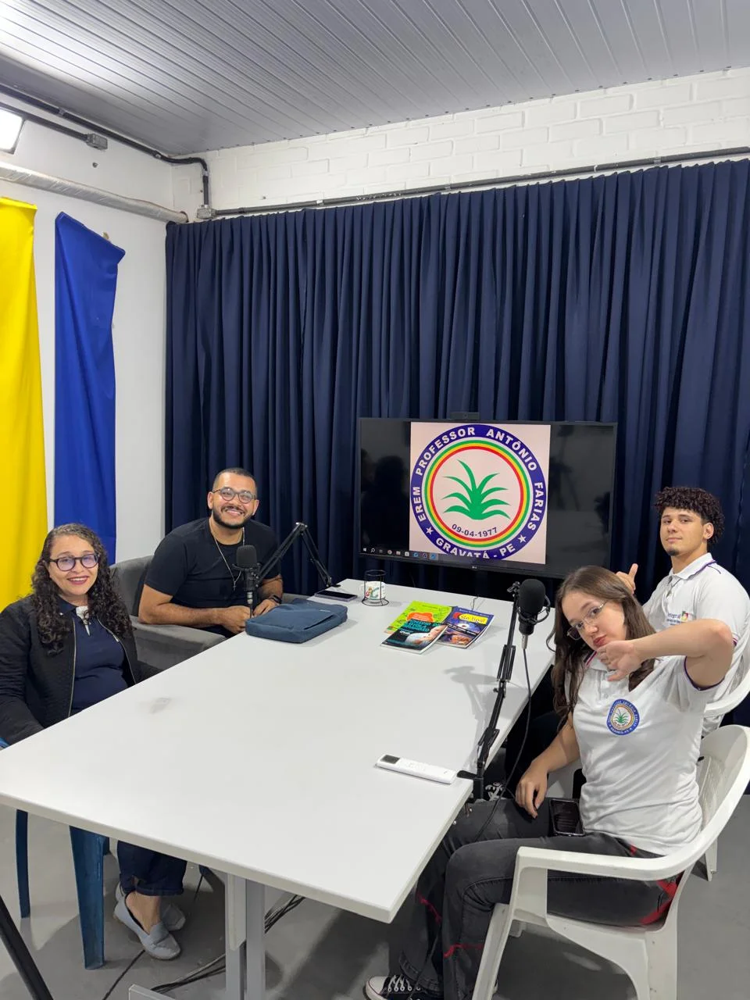
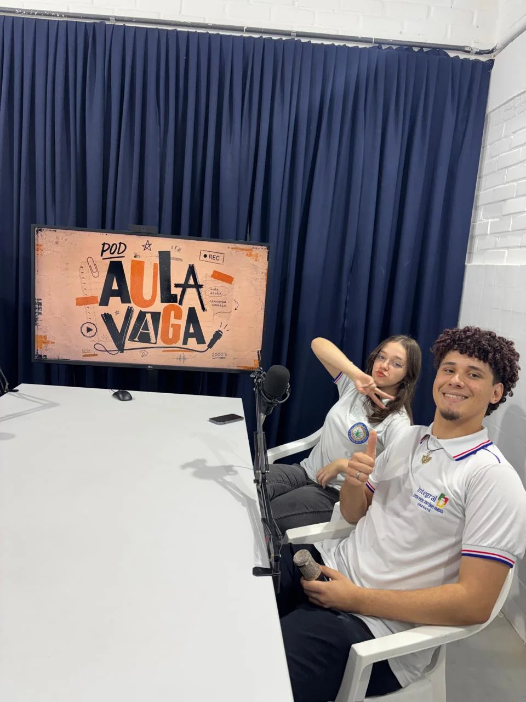
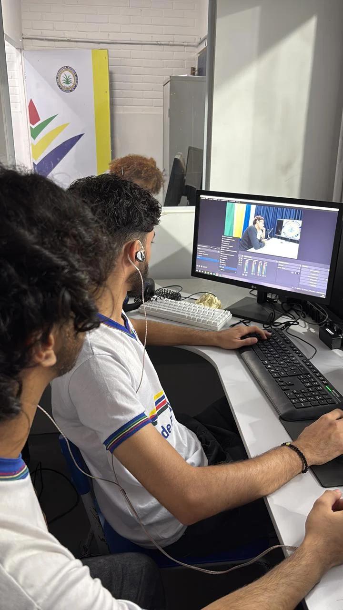
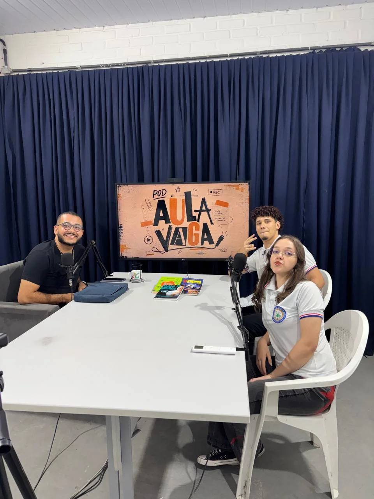
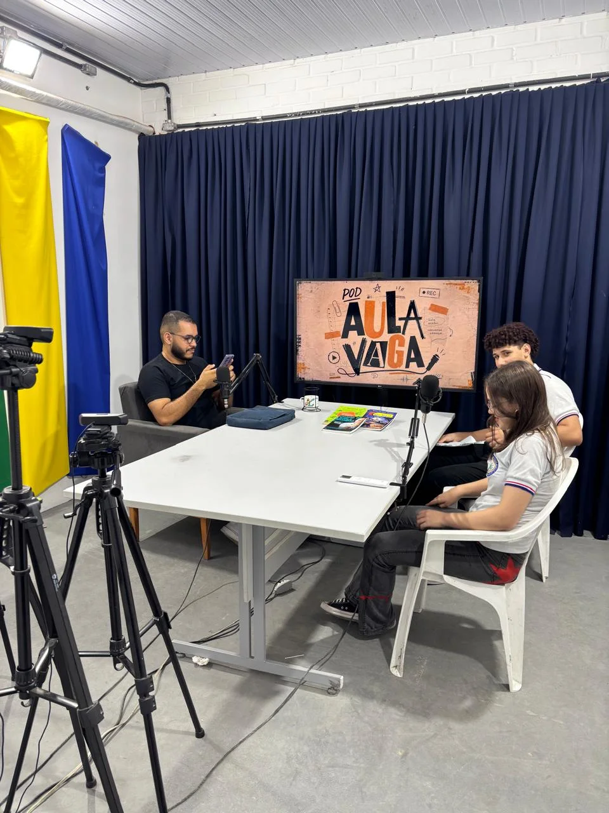
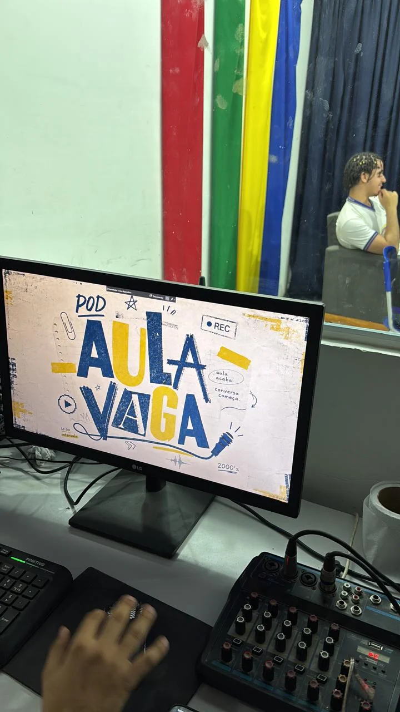
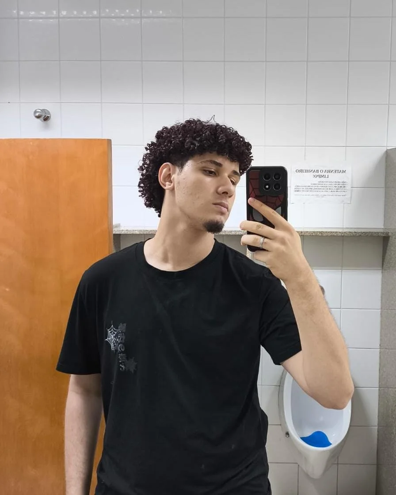
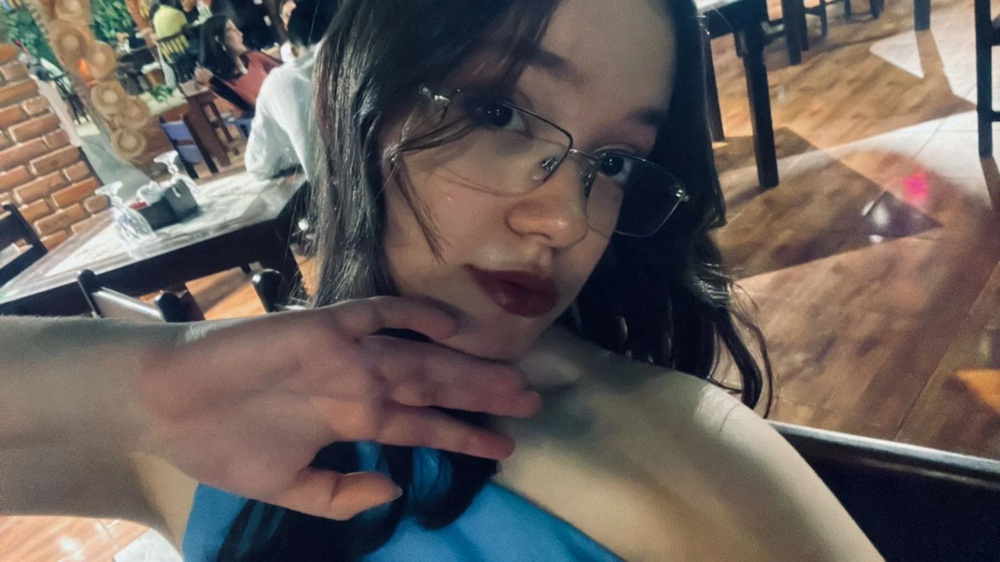

podcast entre tempos
podcast entre tempos
podcast entre tempos
podcast entre tempos
(A lenda)
Tentando desesperadamente fazer Ayrton dar uma gargalhada (Muita Aura para a seriedade dele)
Foi uma conversa leve e divertida, que permitiu conhecer um pouco mais de Ayrton, um ótimo professor que já ensinou muitos alunos e deixou sua marca por onde passou. Entre histórias, experiências e brincadeiras, também tentamos uma missão difícil: arrancar uma risada dele. Talvez fosse simplesmente aura demais para entregar tão fácil.







